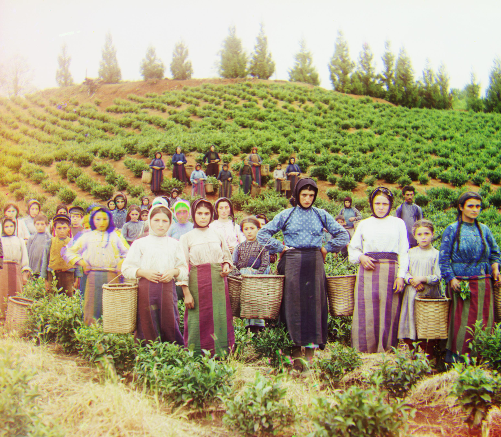
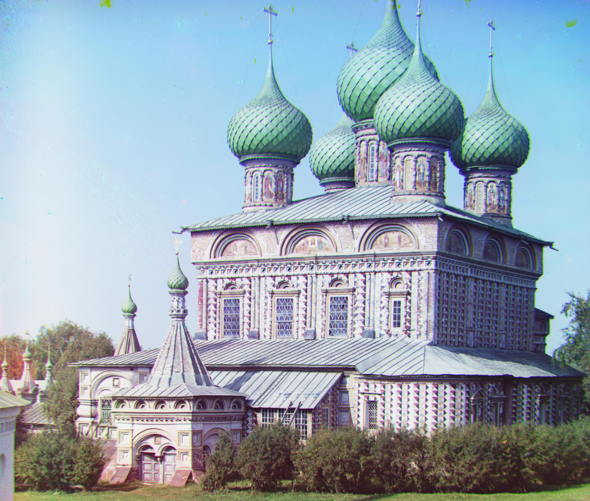

Background
With Tzar’s special permission, Sergei Mikhailovich Prokudin-Gorskii travelled across the Russian Empire in the 20th century. He has taken photographs of everything, ranging from people to buildings even bridges. His idea was to save three exposures of thousands of color pictures onto a glass plate with red, green, and blue filters. His glass plate negatives has been digitized by the Library of Congress. This project aims to automatically produce a color image of these glass plate images with modern image processing methods.
Project Overview
My approach for small images was to search for possible translations of in the range of [-15, 15] for each dimension. I used normalized mutual information as the metric to evaluate each translation based on their similarity. I used the offset that yielded best normalized mutual information score for alignment.
For larger images, this exhaustive method is very inefficient. Thus, I implemented a pyramid approach that uses my previous alignment function with different range (window) parameters. Basically, the pyramid represents the image at different factors of two. As smallest image, I have made the condition that number of pixels in any dimension does not go below 100. For the smallest image, I use the my alignment function for the offset in range of [-46, 46]. For the recursive calls after the smallest image, I defined the window as follows:
elif i >= 3:
wndw = 3
elif i < 3:
wndw = i +1
scale = 1/2**i
i is the variable for the index based on the largeness of the image, at 0th index, we have the original image. With this refined windows for the recursive calls, the algorithm runs faster and still able to obtain color images with accuracy. After obtaining the final images, I cropped %8 from each side along each dimension for each image to get rid of the border pixels.
![cathedral gshift: [5, 2] rshift: [12, 3]](images/cathedral_output.jpg)
cathedral.jpg gshift: [5, 2] rshift: [12, 3]
![monastery gshift: [-3, 2] rshift: [3, 2]](images/monastery_output.jpg)
monastery.jpg gshift: [-3, 2] rshift: [3, 2]
tobolsk.jpg gshift: [3, 2] rshift: [6, 3]
![icon gshift: [40, 16] rshift: [90, 22]](images/icon_output.jpg)
icon.jpg gshift: [40, 16] rshift: [90, 22]

harvesters.jpg gshift: [59, 15] rshift: [124, 12]
![emir gshift: [49, 22] rshift: [106, 40]](images/emir_output.jpg)
emir.jpg gshift: [49, 22] rshift: [106, 40]
![church gshift: [24, -6] rshift: [55, -7]](images/church_output.jpg)
church.jpg gshift: [24, -6] rshift: [55, -7]
![lady gshift: [56, 6] rshift: [115, 11]](images/lady_output.jpg)
lady.jpg gshift: [56, 6] rshift: [115, 11]
![melons gshift: [81, 9] rshift: [178, 12]](images/melons_output.jpg)
melons.jpg gshift: [81, 9] rshift: [178, 12]

onion_church.jpg gshift: [52, 24] rshift: [108, 35]
![sculpture gshift: [33, -12] rshift: [140, -27]](images/sculpture_output.jpg)
sculpture.jpg gshift: [33, -12] rshift: [140, -27]
![self_portrait gshift: [78, 28] rshift: [176, 36]](images/self_portrait_output.jpg)
self_portrait.jpg gshift: [78, 28] rshift: [176, 36]
![three_generations gshift: [53, 14] rshift: [112, 10]](images/three_generations_output.jpg)
three_generations.jpg gshift: [53, 14] rshift: [112, 10]
![train gshift: [42, 0] rshift: [86, 30]](images/train_output.jpg)
train.jpg gshift: [42, 0] rshift: [86, 30]
religious_portrait.jpg (my choosing from collection) gshift: [29, 4] rshift: [69, 6]
![landscape (my choosing from collection) gshift: [14, 26] rshift: [84, 50]](images/landscape.jpg)
landscape.jpg (my choosing from collection) gshift: [14, 26] rshift: [84, 50]
napoleon.jpg (my choosing from collection) gshift: [64, 4] rshift: [132, -2]